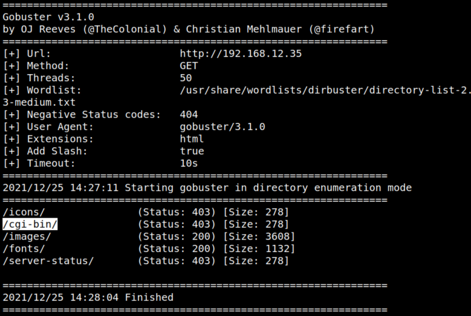
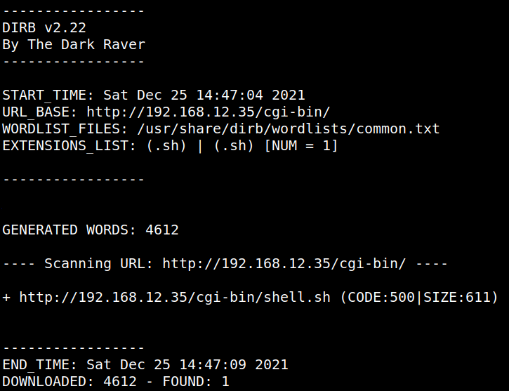

3.1 Webserver with Gobuster and dirb
Brute force with “gobuster”.
Discover the directory and files on the webserver.
1. On your Kali Machine run the following command.
$gobuster dir -f -t 50 -x html -u http://192.168.12.35 -w /usr/share/wordlists/dirbuster/directory-list-2.3-medium.txt
Output:

The original scan had an HTTP 403 response code for “/cgi-bin/”, which is uncommon but is a great indicator that there may be some type of CGI application running on the machine.
“gobuster” doesn’t capture status code 500 by default.
2. Run “dirb” again with that path.
$dirb http://192.168.12.35/cgi-bin -X .sh
Output:

You can see a “shell.sh” file.
This is probably a “shellshock vulnerability”.
You can find a good explanation here.